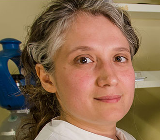
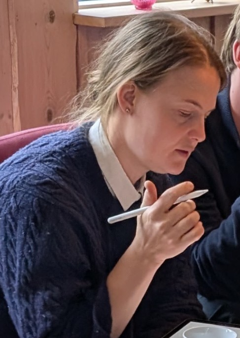
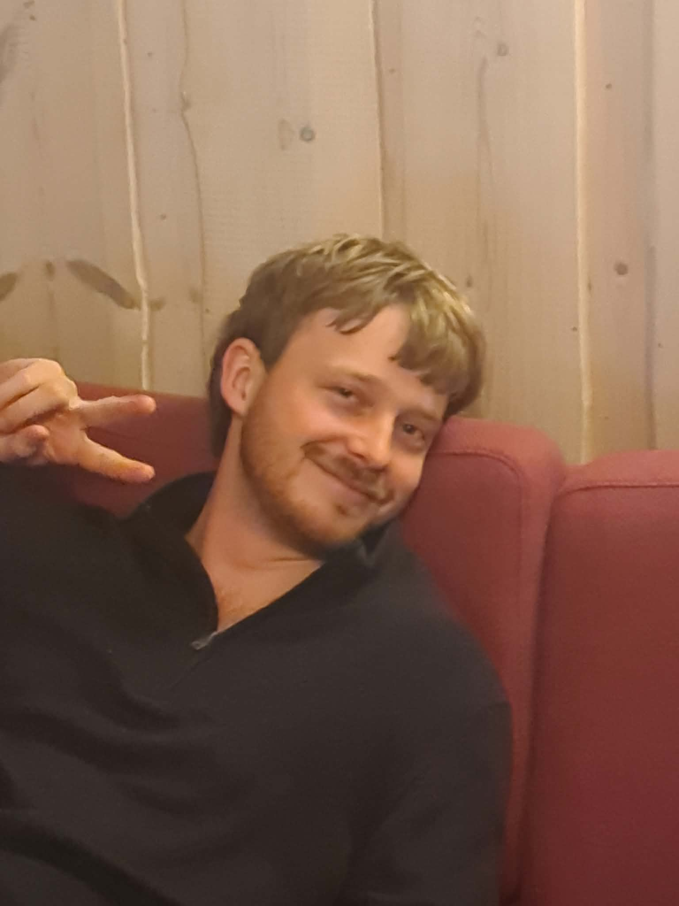
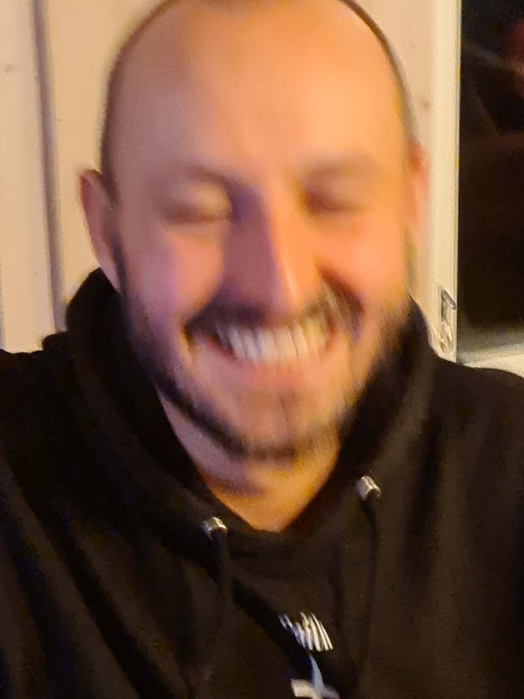
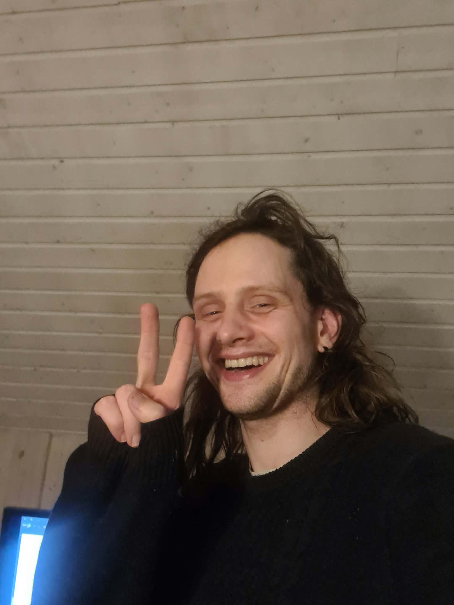
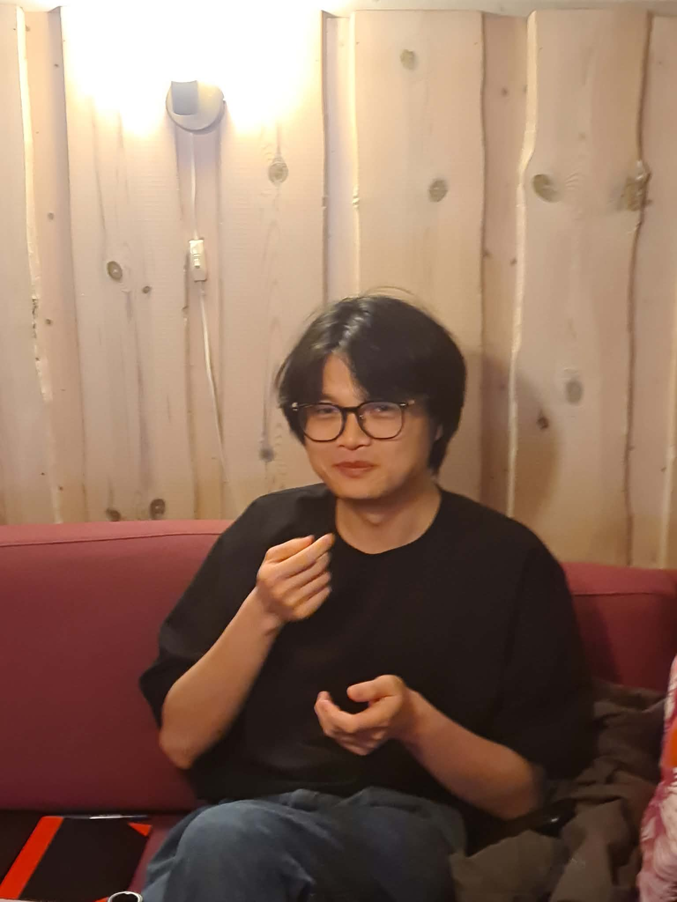
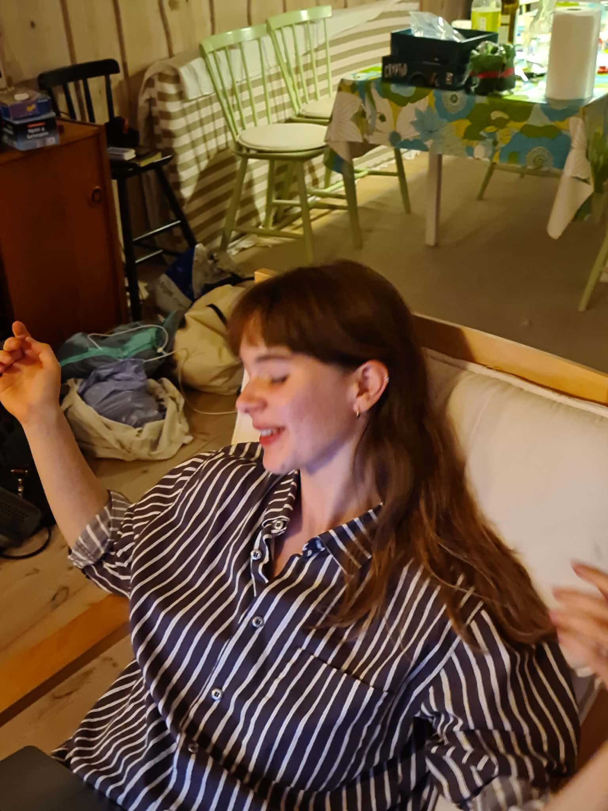

People
Lab members, past and present.
Present

Ala Trusina
Principal Investigator
Life is a collection of processes on many different scales: miliseconds to centuries, nanometers to kilometers. As our capacity for information processing is finite we naturally zoom in and out between these scales to build a mental model of the world: We pick up a few key elements and coarse-grain the details. In my research I use a similar approach of a coarse-grained modeling to capture complex biological phenomena. While the main focus of our research is on common logic of stress response systems, we are gradually expanding into the field of stem cell differentiation (in collaboration with our collegues at Stem Phys).
Favourite vegetable: Carrot

Teresa Emmilie Toudal Knudsen
Postdoctoral Researcher
Short description.
Favourite vegetable: Tomato
Alisa Agafonova
External Ph.d Student
Short description.
Favourite vegetable: Cucumber

Andreas Stillits
PhD Student
Short description.
Favourite vegetable: Radish

Jakob Hallundbæk Schauser
PhD Fellow
Short description.
Favourite vegetable: Bread

Sebastian Øllegaard Utecht
PhD Studerende
Short description.
Favourite vegetable: Champignon

Chengyou Yu
PhD Marie Curie Fellow
Short description.
Favourite vegetable: Cabbage

Anja Matic
PhD Marie Curie
Short description.
Favourite vegetable: Spidsmus